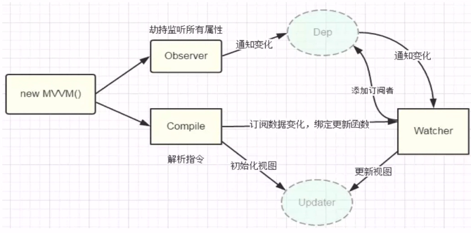
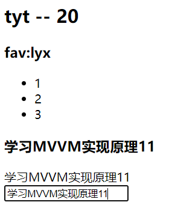
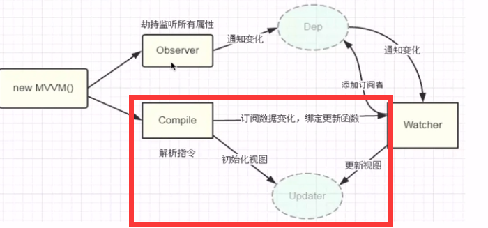
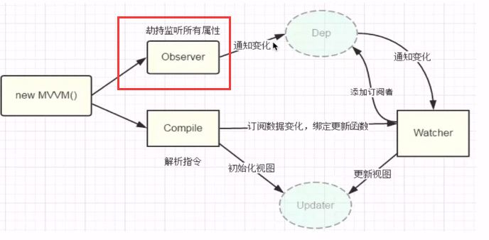
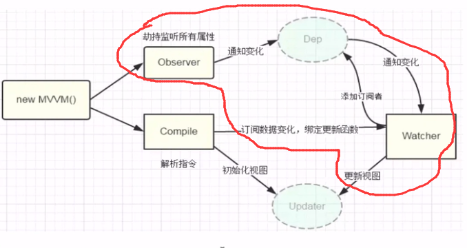

MVVM响应式原理介绍
实现双向绑定的做法
双向绑定本质
- 单向绑定的基础上给可输入元素（input、textarea等）添加了change（input）事件，来动态修改model和view
方法
- 发布者-订阅者模式（backbone.js）
- 脏值检查（angular.js）
- 数据劫持（vue.js）
发布者-订阅者模式
- 一般通过sub，pub的方式实现数据和视图的绑定监听，更新数据方式一般是
vm.set('property',value) - 这种方式不好，更希望以这样的方式
vm.property=value
脏值检查
- 最简单的方式通过
setInterval()定时轮询检测数据变动 - angular只有在指定的事件触发时进入脏值检测
- DOM事件，
- XHR响应事件
- 浏览器Location事件
- Timer事件
- 执行 $digest() 或 $apply()
数据劫持（Vue！）
通过
Object.defineProperty()劫持各个属性的setter，getter，在数据变动时发布消息给订阅者，触发相应的监听回调
Vue的例子
标准Vue代码以及效果
模板
<div id="app"> <h2>{{person.name}} -- {{person.age}}</h2> <h3>fav:{{person.fav}}</h3> <ul> <li>1</li> <li>2</li> <li>3</li> </ul> <h3>{{msg}}</h3> <div v-text='msg'></div> <div v-html='htmlStr'></div> <input type="text" v-model='msg'> </div>使用Vue效果：
new Vue({ el: '#app', data() { return { person: { name: 'tyt', age: 20, fav: 'lyx' }, msg: '学习MVVM实现原理' } } })
编写Vue 基于2.x版本
基本类和获取文档元素
外部使用
new MVue，则抛出MVue类class MVue { constructor(options) { //options则是el data methods等的集合 this.$el = options.el; this.$data = options.data(); this.$options = options; if (this.$el) { //1.数据观察者 //2.指令解析器 new Compile(this.$el, this) } } }- 在构造函数中接受并且初始化 options（设置）
- el 挂载元素
- data 数据
- …
- 如果获取到元素，进行数据观察和指令解析
Compile类解析文档元素class Compile { constructor(el, vm) { this.el = this.isElementNode(el) ? el : document.querySelector(el); this.vm = vm; //1. 获取文档碎片 放入内存 减少回流重绘 const fragment = this.nodeFragment(this.el); //2. 编译模板 this.compile(fragment); //3. 追加子元素到根元素 this.el.appendChild(fragment); } compile(fragment) { //1. 获取节点 const childNodes = fragment.childNodes; //用...运算符强制转换为数组 [...childNodes].forEach((child) => { if (this.isElementNode(child)) { //元素节点 console.log("元素", child); } else { //文本节点 console.log("文本", child); } if (child.childNodes && child.childNodes.length) { //深度遍历元素 this.compile(child); } }); } //判断是否是元素节点 isElementNode(node) { return node.nodeType == 1; } //文档碎片的生成和添加 nodeFragment(el) { const f = document.createDocumentFragment(); let c; while ((c = el.firstChild)) { f.appendChild(c); //每一次添加节点 都会从原来的文档元素中抽取节点 } return f; } }isElementNode方法用来确定是否是元素节点- 文档碎片用来防止回流和重绘
nodeFragment方法生成文档碎片对象f.appendChild(c)不断抽取文档元素，然后添加到文档碎片上
comlile方法目前仅解析模板- 注意使用了…运算符强制转换为数组
- 区分文本节点和元素节点
- 递归调用，解析所有节点
编译类Compile完整实现
元素节点解析
compileElement(node) { // console.log(node); //获取元素的所有属性 const attributes = node.attributes; // console.log(attributes); //用...强制转换为数组 [...attributes].forEach((attr) => { // console.log(attr); const { name, value } = attr; if (this.isDirective(name)) { //是一个指令 v-html v-text... const [, dirctive] = name.split("-"); //还要处理 on:click="" bind:src="" const [dirName, sname] = dirctive.split(":"); //根据指令进行DOM操作 //数据驱动视图 compileUtil[dirName](node, value, this.vm, sname); //删除属性 node.removeAttribute(name); } else if (this.isEventName(name)) { //@指令处理 const EventName = name.split("@")[1]; compileUtil["on"](node, value, this.vm, EventName); } else if (this.isAttrName(name)) { //:指令处理 const AttrName = name.split(":")[1]; compileUtil["bind"](node, value, this.vm, AttrName); } }); }指令在节点属性中，使用
node.attributes获取节点所有属性组成的类数组isDirective判断是否是Vue指令isDirective(attrName) { return attrName.startsWith("v-"); }isEventName是否使用@指令isEventName(attrName) { return attrName.startsWith("@"); }isAttrName是否使用:指令isAttrName(attrName) { return attrName.startsWith(":"); }
compileUtil指令解析的实现const compileUtil = { text(node, expr, vm) { let value; //处理 {\{}} 语法 if (expr.indexOf("{{") !== -1) { //利用正则匹配到 {\{}} 中的内容 value = expr.replace(/\{\{(.+?)\}\}/g, (...args) => { // console.log(args); return this.getVal(vm.$data, args[1]); }); } else { value = this.getVal(vm.$data, expr); } this.updater.textUpdater(node, value); }, html(node, expr, vm) { const value = this.getVal(vm.$data, expr); this.updater.htmlUpdater(node, value); }, model(node, expr, vm) { const value = this.getVal(vm.$data, expr); this.updater.modelUpdater(node, value); }, on(node, value, vm, EventName) { //获取事件处理函数 let fn = vm.$options.methods && vm.$options.methods[value]; //添加事件监听 node.addEventListener(EventName, fn.bind(vm), false); }, bind(node, expr, vm, attrName) { value = this.getVal(vm.$data, expr); node.setAttribute(attrName, value); }, //获取数据的值 防止 person.name.first嵌套 getVal(data, expr) { //第一个自己想的 // expr.split(".").forEach((elem) => { // data = data[elem]; // }); // return data; //第二个是更好的方法 return expr.split(".").reduce((data, currentVal) => { return data[currentVal]; }, data); }, //更新函数 updater: { textUpdater(node, value) { node.textContent = value; }, htmlUpdater(node, value) { node.innerHTML = value; }, modelUpdater(node, value) { node.value = value; }, }, };对每一个指令，书写一个相对应的函数，函数名以指令名代替，从而使用
compileUtil[dirName](node, value, this.vm, sname); //dirName是指令名 node是当前节点 value是指令值 this.vm是当前MVue对象（里面存有数据） //sname是 on 或 bind出现的指令值text函数同时处理了{\{}}语法- 用到了正则表达式，非贪婪模式匹配
{\{}}内部的内容
- 用到了正则表达式，非贪婪模式匹配
每个指令函数行为差不多
- 利用
getVal函数获取MVue内部存储的数据 - 对节点进行更新
- on 添加事件监听；bind 添加节点属性
- 利用
至此实现了Vue原理的
compile部分
Observer类劫持并监听所有属性
编写Observer类
class Observer { constructor(data) { //劫持MVue的数据 this.observe(data); } observe(data) { if (data && typeof data === "object") { //遍历MVue的数据并且 Object.keys(data).forEach((key) => { this.defineReactive(data, key, data[key]); }); } } defineReactive(data, key, value) { //递归遍历 // console.log(value); this.observe(value); //观察数据 Object.defineProperty(data, key, { enumerable: true, configurable: false, //为了让this找到正确的对象，使用箭头函数 set: (newVal) => { //添加新的数据时，同时进行监听 this.observe(newVal); if (newVal !== value) { value = newVal; } }, get() { return value; }, }); } }- 对MVue的每一个数据设置 setter getter从而达到劫持
- 递归遍历保证设置到每一个数据上
- 添加新值时再次观察，保证后续数据仍在劫持
至此实现了
Observer类
Warcher观察者类和Dep依赖收集类
Dep依赖类
class Dep { constructor() { this.subs = []; } //收集观察者 addSub(watcher) { this.subs.push(watcher); } //通知观察者去更新 notify() { this.subs.forEach((w) => { console.log("观察者", this.subs); w.update(); }); } }- 访问数据的时候收集观察者 getter
- 修改数据的时候通知观察者去更新视图 setter
Watcher观察者
class Warcher { constructor(vm, expr, callback) { this.vm = vm; this.expr = expr; this.cb = callback; //保存旧值 this.oldVal = this.getOldVal(); } getOldVal() { //只在初始化时调用 Dep.target = this; //访问数据的同时添加观察值 const oldVal = compileUtil.getVal(this.vm.$data, this.expr); //防止观察者重复 Dep.target = null; return oldVal; } update() { const newVal = compileUtil.getVal(this.vm.$data, this.expr); if (newVal !== this.oldVal) { //根据回调函数更新视图 this.cb(newVal); this.oldVal = newVal; } } }update方法利用传入的回调函数修改视图getOldVal方法在初始化调用一次利用Dep的静态属性
target指向自己获取旧值（初始值）同时触发 getter函数
get() { //在Watcher实例化时，获取Watcher Dep.target && dep.addSub(Dep.target); return value; },此时将观察者添加到dep依赖中
然后去除Dep的静态属性，防止Warcher观察者重复
联合在一起

指令编译阶段（视图初始化），生成Watcher观察者
例如：html指令
html(node, expr, vm) { let value = this.getVal(vm.$data, expr); //在根据指令创建视图时生成观察者 new Warcher(vm, expr, (newVal) => { this.updater.htmlUpdater(node, newVal); }); this.updater.htmlUpdater(node, value); },- 回调函数通过html的更新函数更新视图
Watcher构造时，获取数据旧值（初值），添加到dep
- 访问数据调用 getter（在MVue初始化时已经监听了所有数据）
- getter 内部通过 Dep的静态属性添加Warcher
从而Watcher Observer Dep联合在一起做到数据驱动视图
双向数据绑定和Proxy代理
model的双向数据绑定
实际上是元素事件监听数据输入，即使更改数据即可（因为数据已经可以驱动视图了）
//仅实现input model(node, expr, vm) { let value = this.getVal(vm.$data, expr); //生成观察者 new Warcher(vm, expr, (newVal) => { this.updater.modelUpdater(node, newVal); }); //model 双向数据绑定 node.addEventListener("input", (e) => { //设置值 this.setVal(expr, vm, e.target.value); }); this.updater.modelUpdater(node, value); },model指令解析函数内部添加事件
setVal函数更改双向绑定的数据setVal(expr, vm, newVal) { data = vm.$data; tmpArray = expr.split("."); tmpArray.forEach((val, index) => { if (index === tmpArray.length - 1) { //判断是否找到目标数据 data[val] = newVal; } data = data[val]; }); },- 首先取到目标值的引用
- 然后进行修改（同时触发数据的观察者修改视图）
Proxy代理
。。。。。。
MVue完整代码
- 可以做到Vue的大多数基础功能
//Watcher
class Warcher {
constructor(vm, expr, callback) {
this.vm = vm;
this.expr = expr;
this.cb = callback;
//保存旧值
this.oldVal = this.getOldVal();
}
getOldVal() {
//只在初始化时调用
Dep.target = this;
//访问数据的同时添加观察值
const oldVal = compileUtil.getVal(this.vm.$data, this.expr);
//防止观察者重复
Dep.target = null;
return oldVal;
}
update() {
const newVal = compileUtil.getVal(this.vm.$data, this.expr);
if (newVal !== this.oldVal) {
//根据回调函数更新视图
this.cb(newVal);
this.oldVal = newVal;
}
}
}
//Dep
class Dep {
constructor() {
this.subs = [];
}
//收集观察者
addSub(watcher) {
this.subs.push(watcher);
}
//通知观察者去通知
notify() {
this.subs.forEach((w) => {
// console.log("观察者", this.subs);
w.update();
});
}
}
//Observer类
class Observer {
constructor(data) {
//劫持MVue的数据
this.observe(data);
}
observe(data) {
if (data && typeof data === "object") {
//遍历MVue的数据并且
Object.keys(data).forEach((key) => {
this.defineReactive(data, key, data[key]);
});
}
}
defineReactive(data, key, value) {
//递归遍历
// console.log(value);
this.observe(value);
//创建依赖收集器
const dep = new Dep();
//劫持数据
Object.defineProperty(data, key, {
enumerable: true,
configurable: false,
//为了让this找到正确的对象，使用箭头函数
set: (newVal) => {
//添加新的数据时，同时进行监听
this.observe(newVal);
if (newVal !== value) {
value = newVal;
}
dep.notify();
},
get() {
//初始化
//在Watcher实例化时，获取Watcher
Dep.target && dep.addSub(Dep.target);
return value;
},
});
}
}
//指令行为
const compileUtil = {
//Watcher更新视图返回数据
getContentVal(expr, vm) {
return expr.replace(/\{\{(.+?)\}\}/g, (...args) => {
return this.getVal(vm.$data, args[1]);
});
},
//获取数据的值 防止 person.name.first嵌套
getVal(data, expr) {
// expr.split(".").forEach((elem) => {
// data = data[elem];
// });
// return data;
return expr.split(".").reduce((data, currentVal) => {
return data[currentVal];
}, data);
},
//model 双向绑定
setVal(expr, vm, newVal) {
data = vm.$data;
tmpArray = expr.split(".");
tmpArray.forEach((val, index) => {
if (index === tmpArray.length - 1) {
//判断是否找到目标数据
data[val] = newVal;
}
data = data[val];
});
},
text(node, expr, vm) {
let value;
//处理 {\{}} 语法
if (expr.indexOf("{{") !== -1) {
//利用正则匹配到 {\{}} 中的内容
value = expr.replace(/\{\{(.+?)\}\}/g, (...args) => {
// console.log(args);
//处理{\{}}语法的Watcher
new Warcher(vm, args[1], (newVal) => {
this.updater.textUpdater(node, this.getContentVal(expr, vm));
});
return this.getVal(vm.$data, args[1]);
});
} else {
//处理text的Watcher
new Warcher(vm, expr, (newVal) => {
this.updater.textUpdater(node, newVal);
});
value = this.getVal(vm.$data, expr);
}
this.updater.textUpdater(node, value);
},
html(node, expr, vm) {
let value = this.getVal(vm.$data, expr);
//在根据指令创建视图时生成观察者
new Warcher(vm, expr, (newVal) => {
this.updater.htmlUpdater(node, newVal);
});
this.updater.htmlUpdater(node, value);
},
model(node, expr, vm) {
let value = this.getVal(vm.$data, expr);
//生成观察者
new Warcher(vm, expr, (newVal) => {
this.updater.modelUpdater(node, newVal);
});
//model 双向数据绑定
node.addEventListener("input", (e) => {
//设置值
this.setVal(expr, vm, e.target.value);
});
this.updater.modelUpdater(node, value);
},
on(node, value, vm, EventName) {
//获取事件处理函数
let fn = vm.$options.methods && vm.$options.methods[value];
//添加事件监听
node.addEventListener(EventName, fn.bind(vm), false);
},
bind(node, expr, vm, attrName) {
value = this.getVal(vm.$data, expr);
node.setAttribute(attrName, value);
},
//更新函数
updater: {
textUpdater(node, value) {
node.textContent = value;
},
htmlUpdater(node, value) {
node.innerHTML = value;
},
modelUpdater(node, value) {
node.value = value;
},
},
};
//编译类
class Compile {
constructor(el, vm) {
this.el = this.isElementNode(el) ? el : document.querySelector(el);
this.vm = vm;
//1. 获取文档碎片 放入内存 减少回流重绘
const fragment = this.nodeFragment(this.el);
//2. 编译模板
this.compile(fragment);
//3. 追加子元素到根元素
this.el.appendChild(fragment);
}
compile(fragment) {
//1. 获取节点
const childNodes = fragment.childNodes;
//用...运算符强制转换为数组
[...childNodes].forEach((child) => {
if (this.isElementNode(child)) {
//元素节点
// console.log("元素", child);
this.compileElement(child);
} else {
//文本节点
// console.log("文本", child);
this.compileText(child);
}
if (child.childNodes && child.childNodes.length) {
//深度遍历元素
this.compile(child);
}
});
}
//判断是否是元素节点
isElementNode(node) {
return node.nodeType == 1;
}
//文档碎片的生成和添加
nodeFragment(el) {
const f = document.createDocumentFragment();
let c;
while ((c = el.firstChild)) {
f.appendChild(c);
//每一次添加节点 都会从原来的文档元素中抽取节点
}
return f;
}
//元素节点解析
compileElement(node) {
// console.log(node);
//获取元素的所有属性
const attributes = node.attributes;
// console.log(attributes);
//用...强制转换为数组
[...attributes].forEach((attr) => {
// console.log(attr);
const { name, value } = attr;
if (this.isDirective(name)) {
//是一个指令 v-html v-text...
const [, dirctive] = name.split("-");
//还要处理 on:click="" bind:src=""
const [dirName, sname] = dirctive.split(":");
//根据指令进行DOM操作
//数据驱动视图
compileUtil[dirName](node, value, this.vm, sname);
//删除属性
node.removeAttribute(name);
} else if (this.isEventName(name)) {
//@指令处理
const EventName = name.split("@")[1];
compileUtil["on"](node, value, this.vm, EventName);
} else if (this.isAttrName(name)) {
//:指令处理
const AttrName = name.split(":")[1];
compileUtil["bind"](node, value, this.vm, AttrName);
}
});
}
//文本节点解析
compileText(node) {
if (/\{\{(.*)\}\}/.test(node.textContent)) {
// console.log(node.textContent);
compileUtil["text"](node, node.textContent, this.vm);
}
}
//判断是否是Vue指令
isDirective(attrName) {
return attrName.startsWith("v-");
}
//是否使用@指令
isEventName(attrName) {
return attrName.startsWith("@");
}
//是否使用:指令
isAttrName(attrName) {
return attrName.startsWith(":");
}
}
//MVue 类
class MVue {
constructor(options) {
this.$el = options.el;
this.$data = options.data();
this.$options = options;
if (this.$el) {
//1.数据观察者
new Observer(this.$data);
//2.指令解析器
new Compile(this.$el, this);
}
}
}